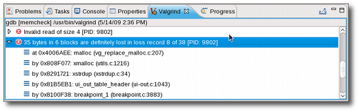
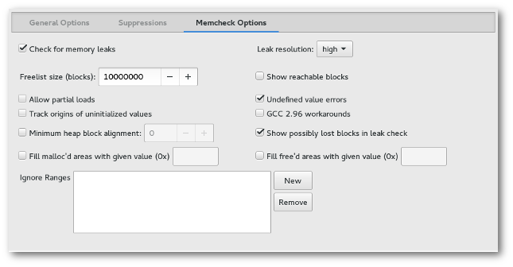

| Using Memcheck | ||
|---|---|---|
|
|
|
|
| General Usage | Using Massif | |
Memcheck is the default tool used by Valgrind and the Valgrind plug-in for Eclipse. It allows you to detect memory-related problems such as memory leaks, use of uninitialized memory, and reads from/writes to inappropriate stack areas. For more information about Memcheck, refer to http://www.valgrind.org/docs/manual/mc-manual.html.
Any memory management errors detected by Memcheck are displayed in the Valgrind view, which appears automatically after a profile run. Each displayed error can be expanded in the Valgrind view to display its stack trace.

In some cases, Memcheck can determine which section of the source code causes a reported error. Whenever this is the case, double-clicking on the stack trace of the reported error will open the related source file and place the insertion point on the line responsible for the error.
To configure a Memcheck profile run, navigate to Profile As > Profile Configurations to access the
Profile Configurations
menu. In the
Valgrind Options
tab, navigate further to
Memcheck Options
.

The Memcheck Options tab allows you to configure the following Memcheck options:
--freelist-vol=, which specifies the maximum total size (in bytes) of memory blocks to be marked "inaccessible" once they have been freed using free (as in C) or delete (as in C++). The default value for
freelist size (blocks)
is 10000000.
--alignment=, which specifies the minimum alignment/size of heap blocks. The default value for this option is 8.
--partial-loads-ok=, which controls how Memcheck handles word-sized, word-aligned loads from addresses from which bytes are addressable and others are not. This is disabled by default (i.e. treat loads from partially invalid and completely invalid addresses as the same).
--workaround-gcc296-bugs, which controls whether Memcheck should assume that small reads/writes below the stack pointer are due to bugs in
gcc-2.96. This option is disabled by default (i.e. do not assume them to be reslting from
gcc-2.96 bugs; report such reads/writes as errors).
Refer to
http://www.valgrind.org/docs/manual/mc-manual.html#mc-manual.suppfiles for information about Memcheck suppression files. For more information about each Memcheck option in the Valgrind plug-in for Eclipse, refer to man valgrind.
|
|

|
|
| General Usage | Using Massif |